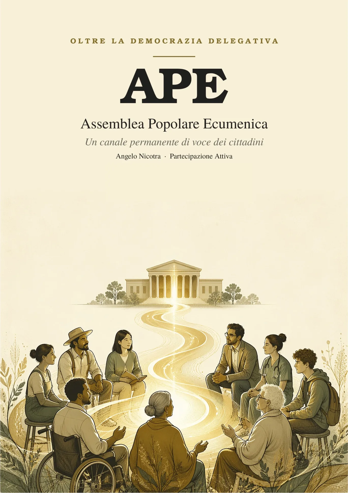

Con APE (Assemblea Popolare Ecumenica), Partecipazione Attiva lancia una nuova idea di Democrazia Partecipativa per rendere i cittadini parte attiva nella gestione politica del nostro Paese.
È la proposta di legge più importante del movimento: una riforma costituzionale che non aggiunge un partito né un candidato, ma uno strumento permanente attraverso cui ogni cittadino può obbligare le istituzioni ad ascoltare e a rispondere. Elaborata da Angelo Nicotra, Presidente di Partecipazione Attiva, ed è oggi proposta ufficiale del movimento.
Trascrizione del video
Da troppo tempo nessuno ascolta una voce. La tua. Per cambiare le cose non serve un salvatore. Non arriverà. Serviamo noi, tutti, alla pari. Possiamo essere i leader di noi stessi. Tocca a noi.
🎥 Il video ha una pagina tutta sua: «Tocca a noi»: lo spot di APE
PensAttivo racconta il Progetto APE
Il volume completo esce presto. Nell'attesa, la mascotte del movimento ne illustra a grandi linee il contenuto in undici minuti: il problema dell'astensione, le radici storiche del sorteggio, come funzionano le direttive vincolanti, le tre leggi costituzionali e i costi. Per approfondire resta il libro.
Perché conta proprio in campagna elettorale
Ogni cinque anni gli elettori affidano un mandato, e per cinque anni — ricorda il documento — non hanno più voce: una promessa fatta per ottenere un voto, oggi, può essere ignorata a costo zero. È il vuoto che l'APE prova a colmare: le direttive delle assemblee sorteggiate sono vincolanti non nel senso che impongono una decisione, ma nel senso che chi le riceve — Governo, Regioni, Comuni — deve attuarle oppure motivare pubblicamente il rifiuto, con un voto a maggioranza assoluta. Proprio nei periodi elettorali, quando i programmi si moltiplicano, è pensato per restare acceso anche dopo il voto: un canale permanente che tiene gli eletti indirizzati verso quello che hanno promesso, o verso quello che i cittadini chiedono loro attraverso l'Ufficio Popolare Territoriale.
Il problema che l'APE vuole risolvere
Tra un'elezione e l'altra, per cinque anni, il cittadino non ha più voce. La democrazia italiana funziona per delega: si vota, si affida il mandato a chi è eletto, e fino al voto successivo la partecipazione è di fatto sospesa. Il modello ha retto finché esistevano i corpi intermedi — partiti di massa, sindacati, associazioni capillari — che tenevano aperto un canale permanente tra società e istituzioni. Quei corpi si sono dissolti.
Non è apatia: gli studi mostrano che è rifiuto consapevole di un sistema percepito come distante e non più influenzabile. L'APE non sostiene che «il sistema ha fallito, quindi va rimpiazzato» — sarebbe una tesi sbagliata e pericolosa. Sostiene qualcosa di più modesto e più solido: manca un organo di cittadini che indichi la direzione tra un'elezione e l'altra, e che le istituzioni debbano attuare o respingere motivando in pubblico, invece di ignorarlo. E il Parlamento va reso più semplice e più rapido.
Cos'è l'APE, e cosa non è
Prima di descrivere cosa fa l'APE, è più importante fissare con precisione cosa l'APE non fa e non potrà mai fare — è proprio da questi confini che dipende la sua legittimità costituzionale.
La sua forza è l'obbligo di rispondere. Le direttive dell'APE sono vincolanti per gli esecutivi: chi le riceve deve attuarle oppure respingerle con una deliberazione a maggioranza assoluta e una motivazione pubblica. Non sono fonti del diritto, non modificano leggi e non creano obblighi per i privati: non impongono una decisione, impediscono di ignorare i cittadini in silenzio.
Il sorteggio, non l'elezione
I componenti dell'APE sono scelti per sorteggio fra i cittadini, mai per elezione — è la scelta più identitaria del progetto, e anche la più contro-intuitiva. L'elezione, per quanto democratica, produce inevitabilmente ciò che si vuole tenere fuori dall'APE: candidature, campagne, raccolta di consenso, schieramenti, carriere. Il sorteggio, al contrario, produce uno specchio statistico della popolazione: persone comuni che portano il punto di vista reale del Paese, non quello filtrato dagli apparati — lo stesso principio già in uso nei giudici popolari delle Corti d'Assise.
L'estrazione avviene dalle liste elettorali, con stratificazione per età, genere e territorio (almeno il 40% di donne e almeno il 15% di under 35), così che lo specchio sia fedele. Chi è estratto può rifiutare entro 15 giorni, e si procede a una nuova estrazione; ma la base di estrazione è l'intero corpo elettorale, non un registro di volontari.
Tre livelli coordinati, ciascuno col suo interlocutore
L'APE si articola su tre livelli — comunale (APEC), regionale (APER) e nazionale (APEN) — coordinati e distinti: l'APEC parla al Comune, l'APER alla Regione, l'APEN al Governo. Le istanze salgono dal basso: nascono negli Uffici Popolari Territoriali e passano dalle APEC agli Uffici Regionali di Raccolta, che le raggruppano per tema e mettono in luce le convergenze fra Comuni; da lì arrivano all'APER e all'APEN. Le direttive locali non possono contrastare quelle nazionali.
Nell'APEN i 436 seggi sono divisi tra le Regioni in base alla superficie, non agli abitanti, fino a un massimo di 25 per Regione; le APER invece seguono la popolazione. È una garanzia contro la discriminazione, non un favore ai piccoli comuni — nessun cittadino deve pesare meno nel farsi ascoltare per il solo fatto di vivere in un luogo meno popoloso.
Il ciclo della direttiva: voce, direttiva, risposta, verifica, referendum
È il cuore operativo del progetto: come una richiesta nasce dal cittadino, percorre l'APE, raggiunge l'istituzione e ne ottiene una risposta — e cosa succede quando la risposta manca, è negativa, o resta sulla carta.
- Voce. Il cittadino deposita un'istanza all'Ufficio Popolare Territoriale del suo Comune, che la registra con ricevuta e la trasmette all'APEC entro 15 giorni.
- Direttiva. L'assemblea ascolta esperti e cittadini in sedute pubbliche, poi vota la direttiva, pubblicata entro 24 ore.
- Risposta. L'istituzione destinataria ha di norma 60 giorni per attuarla oppure respingerla con un voto a maggioranza assoluta e una motivazione pubblica.
- Verifica. L'Organo Indipendente di Garanzia Digitale controlla l'attuazione e segnala le inadempienze; l'APEN verifica ogni sei mesi l'attuazione del programma del Governo e ne pubblica la relazione.
- In caso di silenzio. Si apre la via del referendum propositivo: la decisione torna ai cittadini.
Il referendum propositivo è la leva finale del sistema e si attiva solo a procedimento ordinario esaurito: se la Camera o il Governo restano inerti per 120 giorni senza recepire una direttiva né motivarne il rifiuto, a chiederlo possono essere i due terzi dei componenti dell'APEN oppure 500.000 cittadini. È valido senza alcun quorum di partecipazione — la garanzia sta a monte, nella soglia già alta richiesta per attivarlo, non in un tetto di affluenza che in Italia è servito soprattutto a far fallire i referendum invitando all'astensione. Se il referendum passa, Governo e Camera hanno 180 giorni per attuare la direttiva e non possono più ricorrere alla deroga motivata.
Indennità e permessi di lavoro
Perché la partecipazione sia davvero aperta a tutti — e non solo a chi può dedicarvi tempo gratuitamente — chi è sorteggiato riceve un'indennità proporzionata all'impegno: 24.000 euro l'anno nell'APEN, 12.000 nell'APER, 21 euro a riunione nell'APEC. La legge attuativa dovrà prevedere permessi di lavoro retribuiti obbligatori, come per i giudici popolari. Senza copertura del reddito perduto, l'orizzontalità diventerebbe una finzione: l'assemblea si distorcerebbe verso i ceti abbienti, diventando lo specchio di chi può permetterselo invece che del Paese reale.
Tre leggi insieme: l'APE, il Senato, il referendum propositivo
Il progetto include anche l'abolizione del Senato — ma non su un binario separato. Le tre leggi costituzionali (istituisce l'APE, abolisce il Senato, apre il referendum propositivo) entrano in vigore insieme e formano un sistema unico: o tutte e tre, o nessuna. Non è un dettaglio procedurale: un Parlamento monocamerale senza l'APE concentrerebbe il potere come mai nella storia repubblicana, e i risparmi della soppressione del Senato sono la fonte di finanziamento del sistema APE.
Difese contro lo svuotamento e contro il carrozzone
Chi legge questo progetto ha due timori legittimi e opposti: che l'APE venga svuotata e resa innocua da una maggioranza ostile, oppure che cresca fino a diventare un nuovo carrozzone costoso e autoreferenziale. Contro lo svuotamento: sorteggio, valore delle direttive, deroga motivata, trasparenza e referendum propositivo sono scritti in tre leggi costituzionali, e nessuna maggioranza ordinaria può ridurli; alla legge attuativa, da approvare entro dodici mesi, restano solo i dettagli tecnici. Sul fronte opposto, un Organo Indipendente di Garanzia Digitale (OIGD) — 9 esperti nominati dal Presidente della Repubblica per sei anni, senza rinnovo — certifica i sorteggi, sorveglia la piattaforma, accerta incompatibilità e decadenze, ispeziona gli uffici e ogni anno riferisce alla Camera e all'APEN. Non redige le istruttorie, e i suoi atti su decadenze e certificazioni si possono impugnare davanti al giudice amministrativo.
I costi, detti con onestà
Un organo di partecipazione ha un costo reale, dichiarato senza abbellimenti: indennità ai sorteggiati, permessi di lavoro, uffici territoriali, piattaforma digitale, trasparenza in streaming.
Cosa insegna il mondo
Il modello APE non nasce nel vuoto: dialoga con le esperienze di democrazia partecipativa già sperimentate altrove, prendendone i pregi ed evitandone gli errori.
| Esperienza | Cosa insegna all'APE |
|---|---|
| Irlanda — Citizens' Assembly (2016-2018) | Un'assemblea di cittadini sorteggiati può affrontare temi divisivi e produrre proposte che il sistema recepisce. Conferma la praticabilità del sorteggio. |
| Belgio — Ostbelgien (dal 2019) | Primo Consiglio dei cittadini permanente d'Europa: prova che la permanenza e il dovere di risposta funzionano. |
| Francia — Convention Citoyenne (2019-2020) | Lezione cautelativa: raccogliere la voce e poi disattenderla fa crollare la fiducia. Da qui la deroga motivata a maggioranza assoluta, la verifica dell'attuazione affidata all'OIGD e il referendum senza quorum come ultima istanza. |
| Italia — giudici popolari | Il sorteggio per una funzione pubblica delicata è già nel nostro ordinamento e funziona. L'APE ne estende il principio. |
Va detto con chiarezza cosa la Convention Citoyenne francese dimostra e cosa no: non dimostra che il sorteggio non funziona — dimostra che il sorteggio senza obbligo di risposta e senza sbocco è teatro. L'APE aggiunge esattamente le cose che alla Francia mancavano.
La Rete APE: una chiamata unitaria, non di Partecipazione Attiva
Siamo nella fase di massima diffusione: si parla a tutti i cittadini, e in particolare alle tante piccole associazioni — come lo è Partecipazione Attiva — che da sole pesano poco e insieme possono incidere. Per questo Partecipazione Attiva ha aperto una rete che invita singoli cittadini, associazioni, movimenti e comitati civici a condividere questi principi, con peso paritario per ogni soggetto aderente: nessuna gerarchia, nessuna proprietà del progetto. Non è la proposta di un movimento che chiede sostegno: è una chiamata a costruire insieme, da attivisti e sostenitori alla pari, uno strumento istituzionale vero attraverso cui i cittadini abbiano finalmente voce.
Il documento, in una frase
L'APE non promette che le proposte dei cittadini vengano approvate — sarebbe falso. Promette qualcosa di più solido e verificabile: che nessuna direttiva possa essere ignorata in silenzio, che chi la respinge debba farlo con un voto a maggioranza assoluta e una motivazione pubblica, che l'attuazione sia controllata da un organo indipendente, e che, se tutto si ferma, la decisione torni ai cittadini.
Non un salvatore. Noi. I leader di noi stessi. Il documento integrale, con le formule costituzionali e tutte le garanzie, è disponibile per il download in questa pagina. Il testo completo delle tre leggi è nel volume, di prossima pubblicazione.